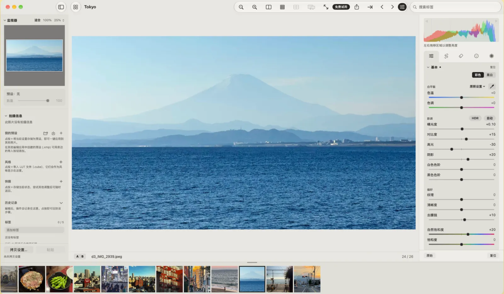

RAW
RAW 以为拍摄相机调校的颜色和亮度打开。

内置 132 款相机配置文件
富士、索尼、佳能、尼康、哈苏、DJI 和 iPhone，每款都匹配了颜色和亮度。
无需更新 App 即可支持新相机
在设置中立即或每周检查新的配置文件包，之后打开的照片即可使用。
支持保护高光的拍摄模式
用佳能高光色调优先或富士 DR200/DR400 拍摄的照片，也会以你在相机上看到的亮度打开。
常见 RAW 格式全部支持
CR3、CR2、NEF、ARW、RAF、RW2、ORF、DNG、3FR、IIQ 等。在 Mac 上，macOS 暂不支持的新相机，会改为编辑内嵌 JPEG 并告诉你。
JPEG、HEIC 等使用同样的工具
JPEG、HEIC/HIF、PNG、TIFF、WebP 和 AVIF 也能使用与 RAW 相同的滑块、蒙版和预设。
按文件夹打开的快速 RAW 编辑器
免费下载，30 天内免费试用全部功能。需要 macOS 26 或更高版本。 Windows 需 10（64 位）或更高版本。